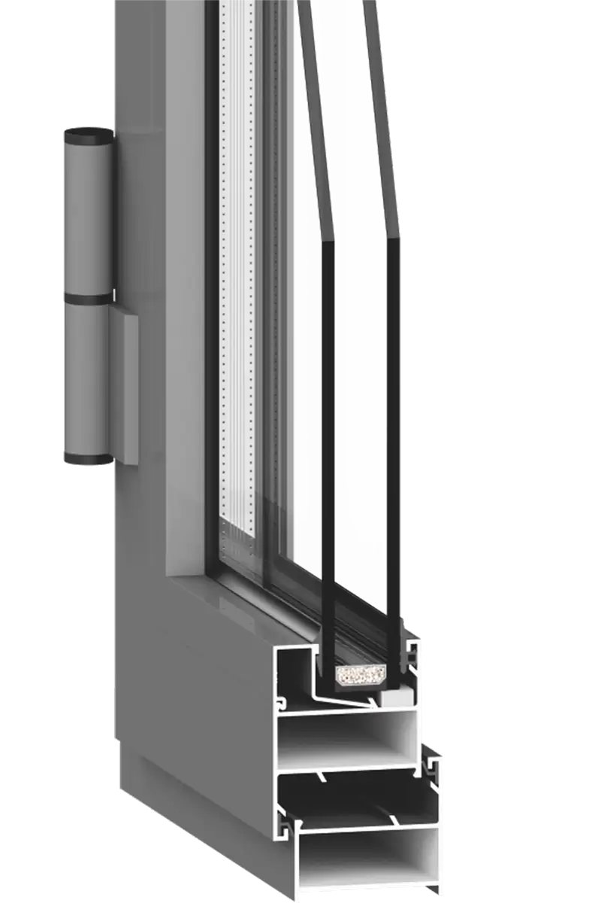
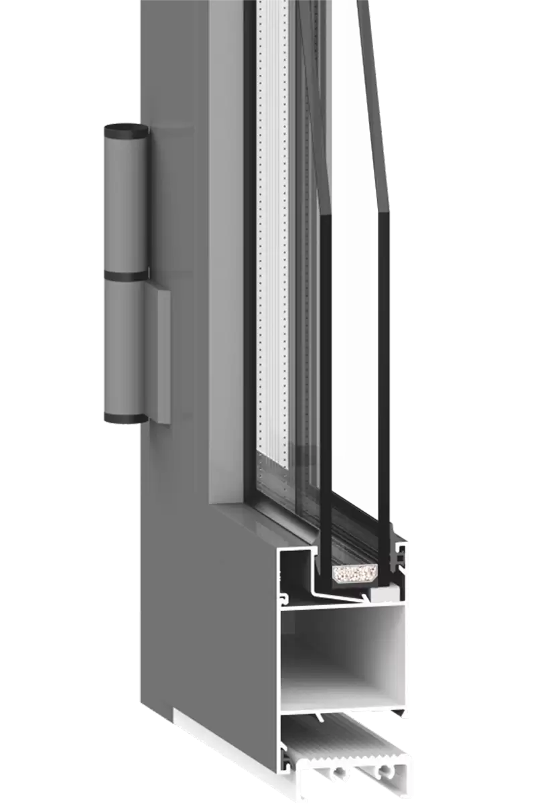

Технічні характеристики
Віконний
Дверний

Кількість камер профілю
1
наявність термомоста
немає
переріз рами (монтажна глибина)
45 мм
переріз стулки
45 мм
стикування штапика
стик в стик під прямим кутом
система ущільнення притвору
двоконтурна, EPDM
опір теплопередачі
немає
товщина зовнішньої стінки
1,3 мм
скло
4, 5, 6, 7, 8, 10 мм
товщина заповнення конструкцій
4-24 мм
Колір профілів
порошкове покриття
за шкалою RAL
за шкалою RAL
* Cистема забезпечена дренажно-вентиляційними отворами для відводу вологи і вентиляції фальца склопакета, які закриваються із зовнішнього боку пластиковими заглушками. Ця конструктивна особливість сприяє збільшенню терміну служби виробу.